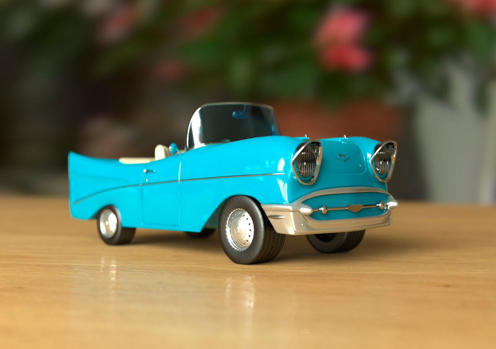

本教程介绍了通过 Arnold 渲染器使用 HDR 贴图对场景进行照明和渲染的过程。我们将介绍如何使用 skydome_light 逼真地为玩具车模型提供照明。
当对需要基于 HDRI 的逼真外部照明的场景进行渲染时，skydome_light 尤其有用。此外，我们还将使用 standard_surface 着色器作为基础来为模型创建逼真材质。最后，我们将使用 Arnold 的部分摄影机属性来添加一些景深，并在渲染最终图像之前查看要使用的渲染设置。
要下载本教程中使用的 HDRI，请单击此处。